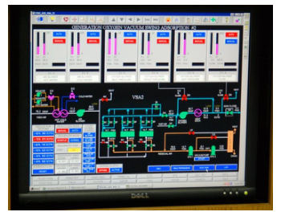
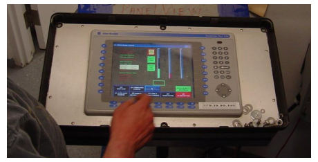
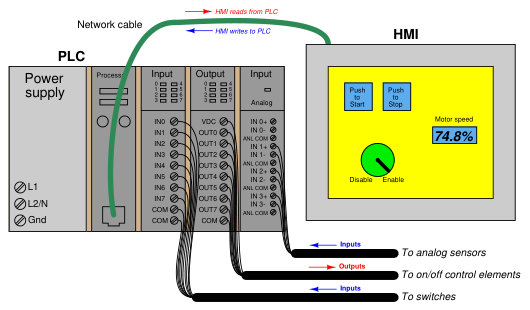
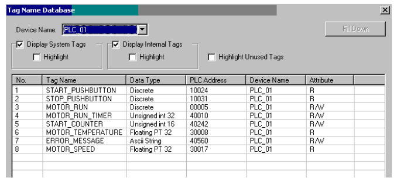
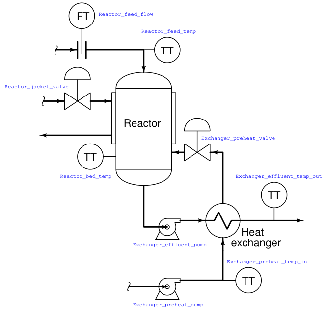

The original, as published: Tony R. Kuphaldt, Lessons In Industrial Instrumentation, Human-Machine Interfaces. CC BY 4.0, https://creativecommons.org/licenses/by/4.0/. Imported as published, from https://www.ibiblio.org/kuphaldt/socratic/sinst/book/liii.pdf https://www.ibiblio.org/kuphaldt/socratic/sinst/book/liii.pdf
Programmable logic controllers are built to input various signal types (discrete, analog), execute control algorithms on those signals, and then output signals in response to control processes. By itself, a PLC generally lacks the capability of displaying those signal values and algorithm variables to human operators. A technician or engineer with access to a personal computer and the requisite software for editing the PLC’s program may connect to the PLC and view the program’s status “online” to monitor signal values and variable states, but this is not a practical way for operations personnel to monitor what the PLC is doing on a regular basis. In order for operators to monitor and adjust parameters inside the PLC’s memory, we need a different sort of interface allowing certain variables to be read and written without compromising the integrity of the PLC by exposing too much information or allowing any unqualified person to alter the program itself. One solution to this problem is a dedicated computer display programmed to provide selective access to certain variable’s in the PLC’s memory, generally referred to as Human31-Machine Interface, or HMI. HMIs may take the form of general-purpose (“personal”) computers running special graphic software to interface with a PLC, or as special-purpose computers designed to be mounted in sheet metal panel fronts to perform no task but the operator-PLC interface. This first photograph shows an example of an ordinary personal computer (PC) with HMI software running on it:

The display shown here happens to be for monitoring a vacuum swing adsorption (VSA) process for purifying oxygen extracted from ambient air. Somewhere, a PLC (or collection of PLCs) is monitoring and controlling this VSA process, with the HMI software acting as a “window” into the PLC’s memory to display pertinent variables in an easy-to-interpret form for operations personnel. The personal computer running this HMI software connects to the PLC(s) via digital network cables such as Ethernet.
31An older term for an operator interface panel was the “Man-Machine Interface” or “MMI.” However, this fell out of favor due to its sexist tone.
This next photograph shows an example of a special-purpose HMI panel designed and built expressly to be used in industrial operating environments:

These HMI panels are really nothing more than “hardened” personal computers built ruggedly and in a compact format to facilitate their use in industrial environments. Most industrial HMI panels come equipped with touch-sensitive screens, allowing operators to press their fingertips on displayed objects to change screens, view details on portions of the process, etc.

Technicians and/or engineers program HMI displays to read and write data via a digital network to one or more PLCs. Graphical objects arrayed on the display screen of an HMI often mimic real-world indicators and switches, in order to provide a familiar interface for operations personnel. A “pushbutton” object on the face of an HMI panel, for example, would be configured to write one bit of data to the PLC, in a manner similar to a real-world switch writing one bit of data to the PLC’s input register.
Modern HMI panels and software are almost exclusively tag-based, with each graphic object on the screen associated with at least one data tag name, which in turn is associated to data points (bits, or words) in the PLC by way of a tag name database file resident in the HMI. Graphic objects on the HMI screen either accept (read) data from the PLC to present useful information to the operator, send (write) data to the PLC from operator input, or both. The task of programming an HMI unit consists of building a tag name database and then drawing screens to illustrate the process to as good a level of detail as operators will need to run it. An example screenshot of a tag name database table for a modern HMI is shown here:

The tag name database is accessed and edited using the same software to create graphic images in the HMI. In this particular example you can see several tag names (e.g. START PUSHBUTTON, MOTOR RUN TIMER, ERROR MESSAGE, MOTOR SPEED) associated with data points within the PLC’s memory (in this example, the PLC addresses are shown in Modbus register format). In many cases the tag name editor will be able to display corresponding PLC memory points in the same manner as they appear in the PLC programming editor software (e.g. I:5/10, SM0.4, C11, etc.).
An important detail to note in this tag name database display is the read/write attributes of each tag. Note in particular how four of the tags shown are read-only: this means the HMI only has permission to read the values of those four tags from the PLC’s memory, and not to write (alter) those values. The reason for this in the case of these four tags is that those tags refer to PLC input data points. The START PUSHBUTTON tag, for instance, refers to a discrete input in the PLC energized by a real pushbutton switch. As such, this data point gets its state from the energization of the discrete input terminal. If the HMI were to be given write permission for this data point, there would likely be a conflict. Suppose input terminal on the PLC were energized (setting the START PUSHBUTTON bit to a “1” state) and the HMI simultaneously attempted to write a “0” state to the same tag. One of these two data sources would win, and other would lose, possibly resulting in unexpected behavior from the PLC program. For this reason, data points in the PLC linked to real-world inputs should always be limited as “read-only” permission in the HMI’s database, so the
HMI cannot possibly generate a conflict. The potential for data conflict also exists for some of the other points in the database, however. A good example of this is the MOTOR RUN bit, which is the bit within the PLC program telling the real-world motor to run. Presumably, this bit gets its data from a coil in the PLC’s Ladder Diagram program. However, since it also appears in the HMI database with read/write permission, the potential exists for the HMI to over-write (i.e. conflict) that same bit in the PLC’s memory. Suppose someone programmed a toggling “pushbutton” screen object in the HMI linked to this tag: pushing this virtual “button” on the HMI screen would attempt to set the bit (1), and pushing it again would attempt to reset the bit (0). If this same bit is being written to by a coil in the PLC’s program, however, there exists the distinct possibility that the HMI’s “pushbutton” object and the PLC’s coil will conflict, one trying to tell the bit to be a “0” while the other tries to tell that bit to be a “1”. This situation is quite similar to the problem experienced when multiple coils in a Ladder Diagram program are addressed to the same bit. The general rule to follow here is never allow more than one element to write to any data point. In my experience teaching PLC and HMI programming, this is one of the more common errors students make when first learning to program HMIs: they will try to have both the HMI and the PLC writing to the same memory locations, with weird results.
One of the lessons you will learn when programming large, complex systems is that it is very beneficial to define all the necessary tag names before beginning to lay out graphics in an HMI. The same goes for PLC programming: it makes the whole project go faster with less confusion if you take the time to define all the necessary I/O points (and tag names, if the PLC programming software supports tag names in the programming environment) before you begin to create any code specifying how those inputs and outputs will relate to each other. Maintaining a consistent convention for tag names is important, too. For example, you may wish to begin the tag name of every hard-wired I/O point as either INPUT or OUTPUT (e.g. INPUT PRESSURE SWITCH HIGH, OUTPUT SHAKER MOTOR RUN, etc.). The reason for maintaining a strict naming convention is not obvious at first, since the whole point of tag names is to give the programmer the freedom to assign arbitrary names to data points in the system. However, you will find that most tag name editors list the tags in alphabetical order, which means a naming convention organized in this way will present all the input tags contiguously (adjacent) in the list, all the output tags contiguously in the list, and so on.
Another way to leverage the alphabetical listing of tag names to your advantage is to begin each tag name with a word describing its association to a major piece of equipment. Take for instance this example of a process with several data points defined in a PLC control system and displayed in an HMI:

If we list all these tags in alphabetical order, the association is immediately obvious:
As you can see from this tag name list, all the tags directly associated with the heat exchanger are located in one contiguous group, and all the tags directly associated with the reactor are located in the next contiguous group. In this way, judicious naming of tags serves to group them in hierarchical fashion, making them easy for the programmer to locate at any future time in the tag name database. You will note that all the tag names shown here lack space characters between words (e.g. instead of “Reactor bed temp”, a tag name should use hyphens or underscore marks as spacing characters: “Reactor bed temp”), since spaces are generally assumed by computer programming languages to be delimiters (separators between different variable names).
Like programmable logic controllers themselves, the capabilities of HMIs have been steadily increasing while their price decreases. Modern HMIs support graphic trending, data archival, advanced alarming, and even web server ability allowing other computers to easily access certain data over wide-area networks. The ability of HMIs to log data over long periods of time relieves the PLC of having to do this task, which is very memory-intensive. This way, the PLC merely “serves” current data to the HMI, and the HMI is able to keep a record of current and past data using its vastly larger memory reserves32. Some modern HMI panels even have a PLC built inside the unit, providing control and monitoring in the same device. Such panels provide terminal strip connection points for discrete and even analog I/O, allowing all control and interface functions to be located in a single panel-mount unit.
32If the HMI is based on a personal computer platform (e.g. Rockwell RSView, Wonderware, FIX/Intellution software), it may even be equipped with a hard disk drive for enormous amounts of historical data storage.